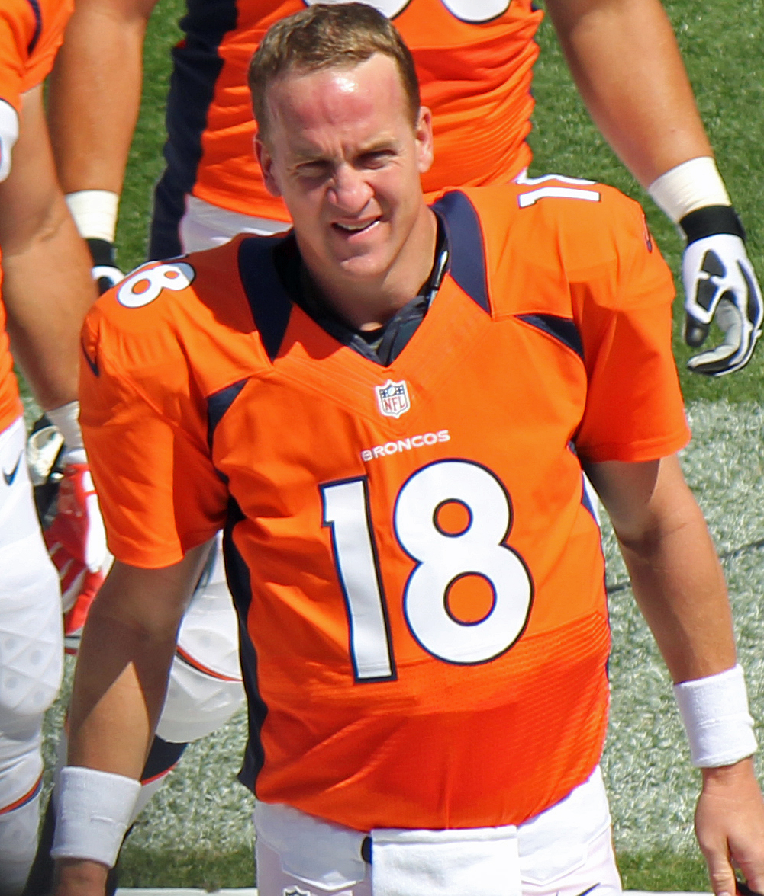
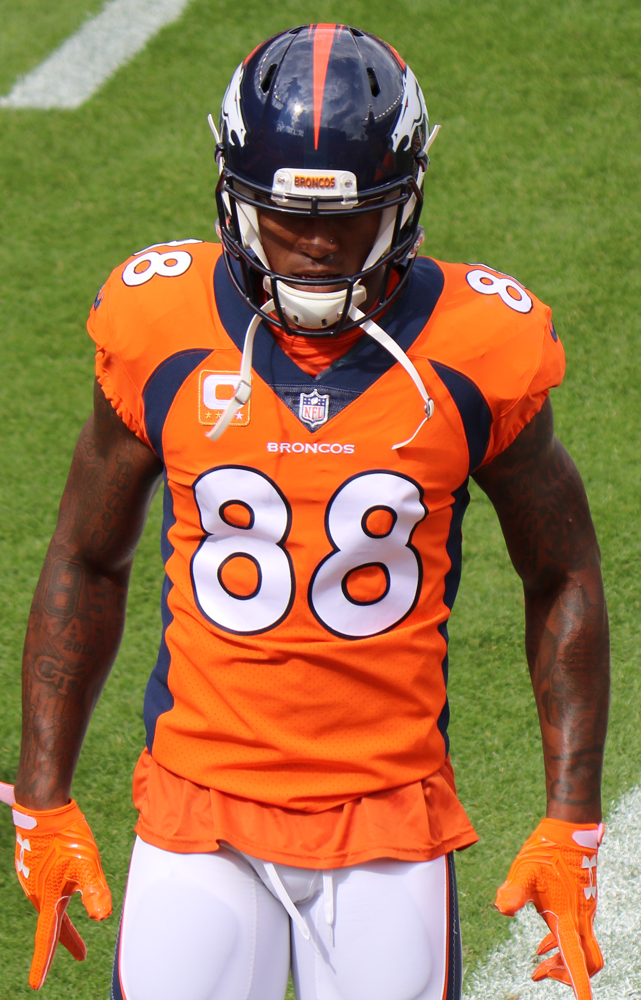
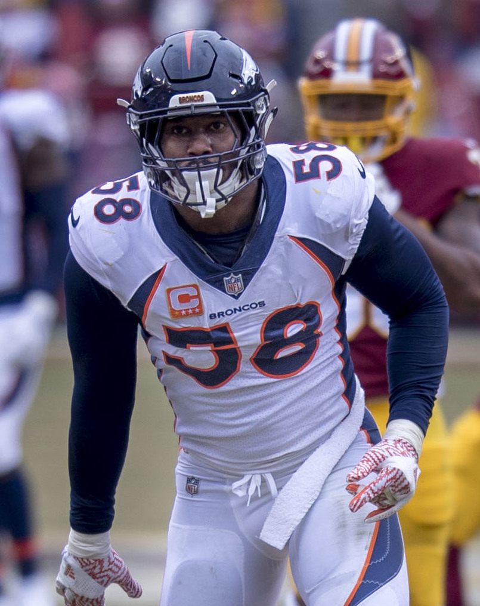
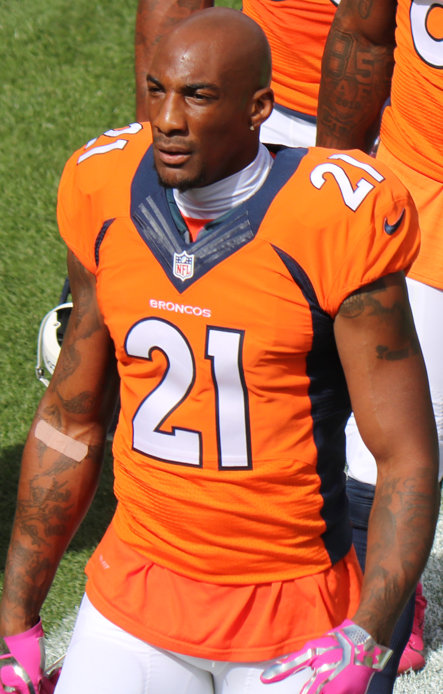

the 2016 broncos won the superbowl deafeting the panthers 24-10 in superbowl 50 at levis stadium in santa clara
2016 superbowl highlights
manning was an elite qb for the colts and then the broncos he won a superbowl with each he won 5 mvp awards and hold multiple passing records he is considered one of the gretest qbs of all time
this is the link to peyon mannings superbowl highlights
thomas was a nfl wide reciver with the denver broncos wining superbowl 50 with denver and made it to 5 pro bowls before his unexpected death in 2021. rest in peace DT.

miller is considered to be one of the best pass rushers of all time he won 2 superbowls and won superbowl 50 mvp with a domonant preformance over the carolina panthers recording 3 sacks 2 forced fumbles 6 tackles 2 qb hits
von millers superbowl highlights
Aqib Talib was a star cornerback for the Denver Broncos playing a key role in the team's Super Bowl 50 victory and being a member of the No Fly Zone secondary